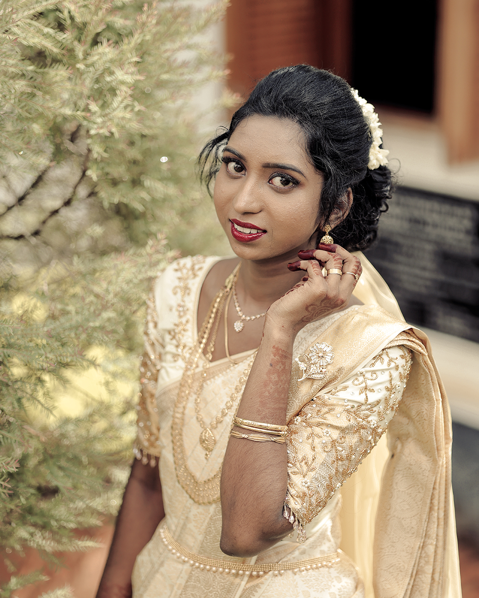
Luxury Wedding Photography / Kanyakumari
Where love becomes timeless.
Wedding stories captured with elegance, silence, emotion, and soul — crafted for couples who want their memories to feel eternal.
Signature Statement
A wedding is not just a day. It is memory architecture.
At Sharon Photography, every frame is treated like an heirloom — quiet glances, sacred rituals, laughter between families, and the emotional pauses that make a wedding unforgettable.
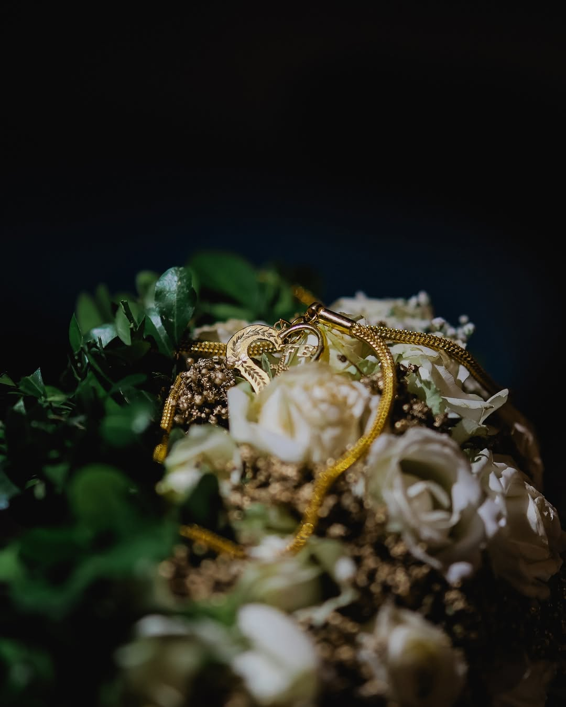
Featured Stories
Three ways memory becomes visible.
Bride Editorial
The quiet powerof a bride.
Bridal portraits are not just about beauty. They are about stillness, strength, family, and the final few moments before a life changes forever.
- Stillness
- Portraits with breathing room, soft light, and quiet expression.
- Ritual
- Details, jewellery, fabric, and the gestures families remember.
- Legacy
- Frames shaped to feel elegant now and meaningful years later.
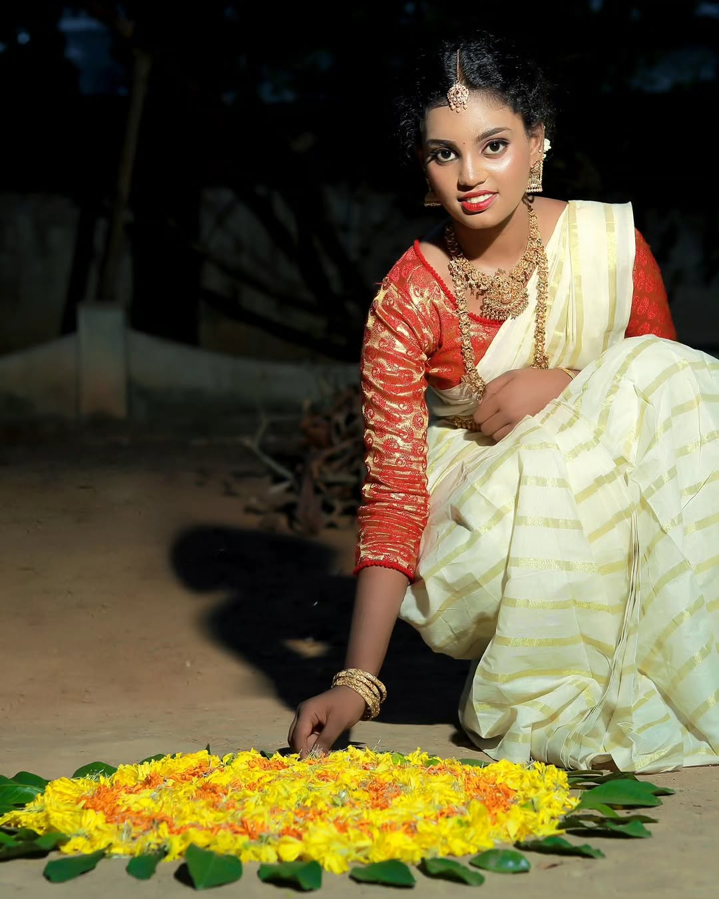
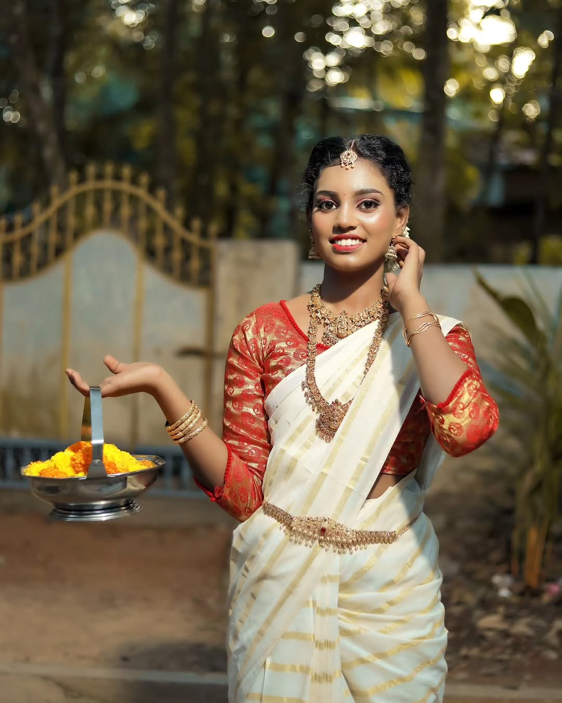
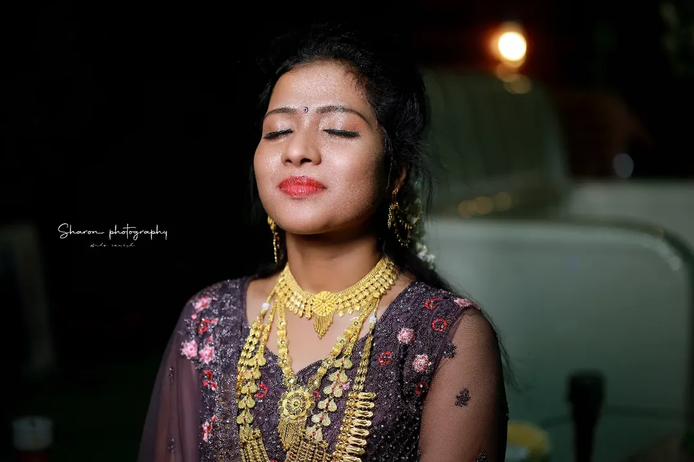
Couple Gallery Movement
Two people. One visual language.
A slow-moving contact sheet of unscripted closeness, formal elegance, soft rituals, and frames that feel like memory.
Scroll story
The gallery travels horizontally as you scroll, like a cinematic wedding contact sheet.
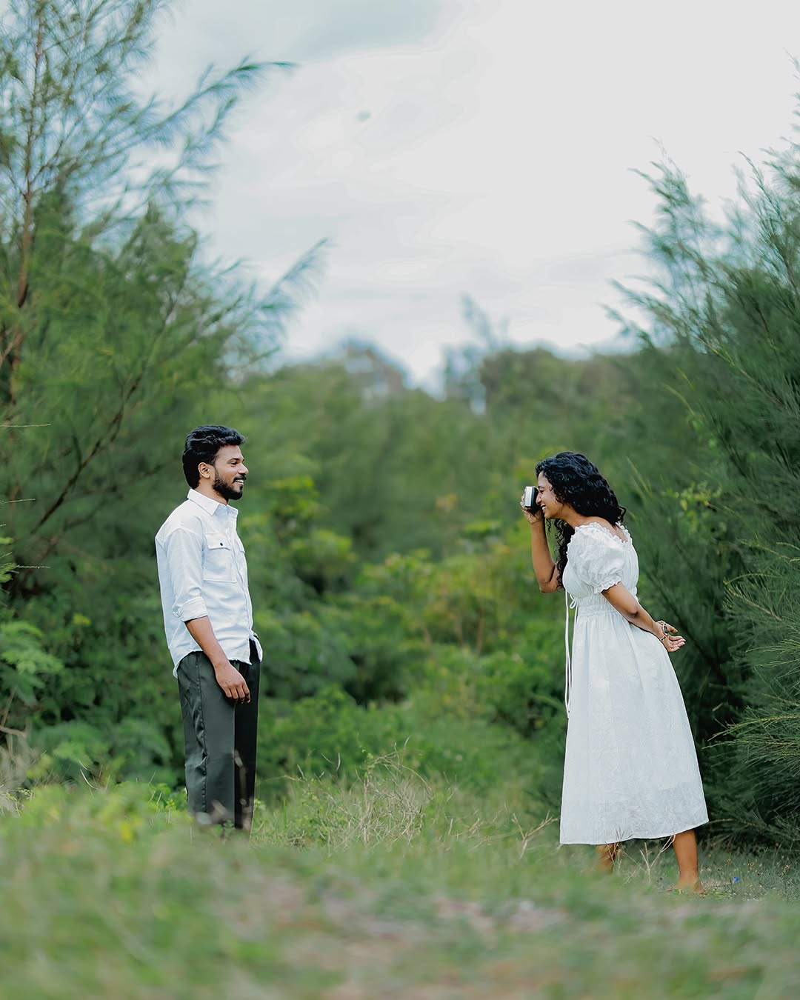
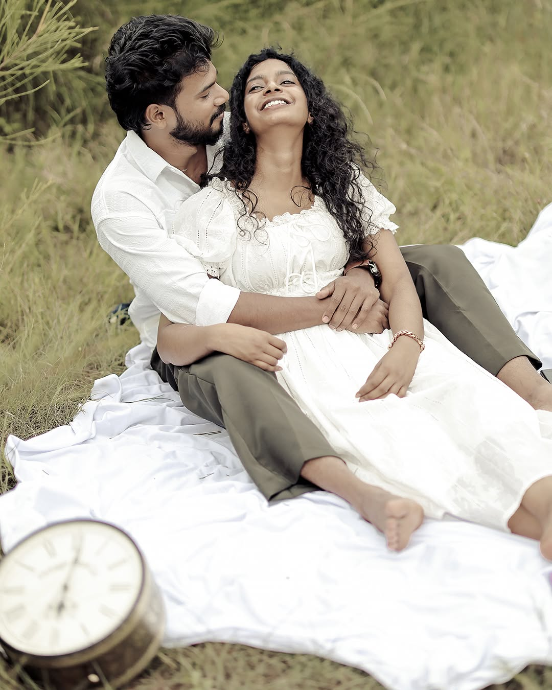
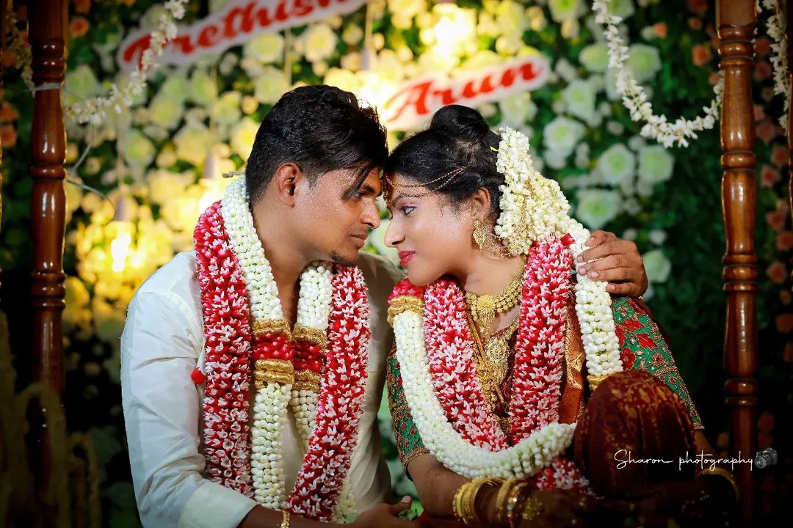
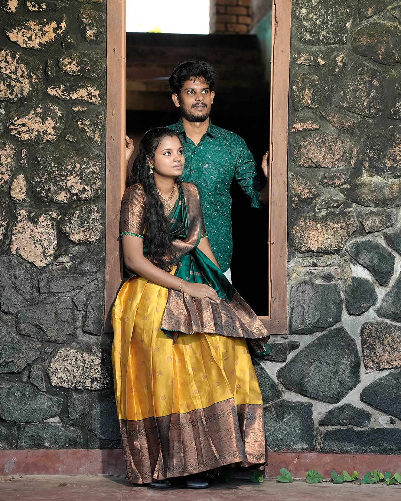
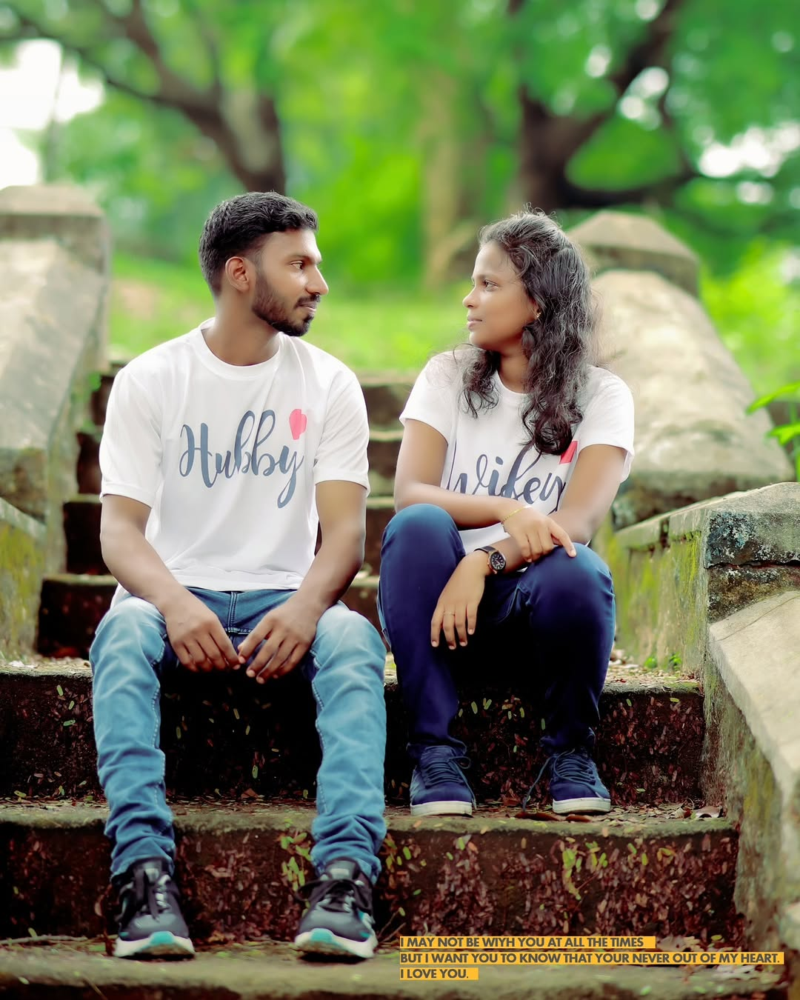
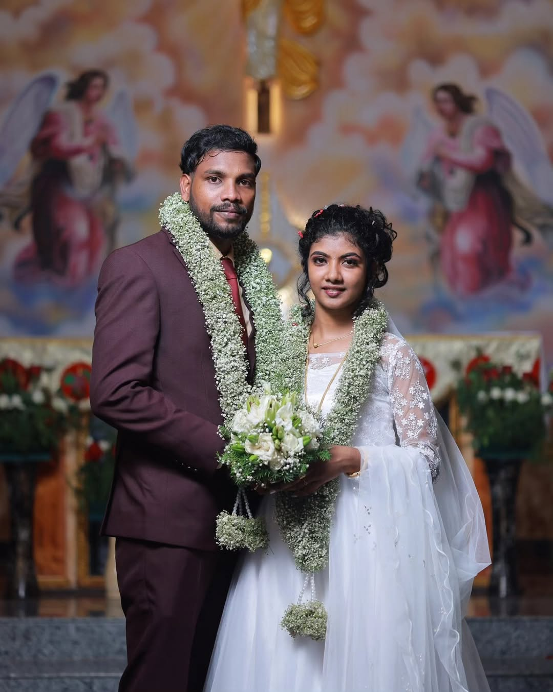
The Experience
From first call to final album, everything is intentional.
We understand your story, your families, your rituals, and the moments that matter most.
We shape the visual mood, locations, timing, and key frames before the wedding begins.
We move quietly, observe deeply, and capture both grand rituals and hidden emotions.
Your memories are edited, refined, and delivered as a timeless wedding story.
Packages / Services
Wedding stories for every kind of celebration.
Intimate Weddings
For couples who want quiet, emotional coverage of close-family celebrations.
Ideal for close rituals and family-led gatherings. EnquireGrand Wedding Stories
Complete wedding day coverage with couple portraits, ceremony, family frames, and event storytelling.
Ideal for full wedding days and multi-event stories. EnquireEditorial Couple Sessions
Premium couple portraits before or after the wedding with a cinematic, magazine-like approach.
Ideal for portraits, pre-weddings, and legacy frames. Enquire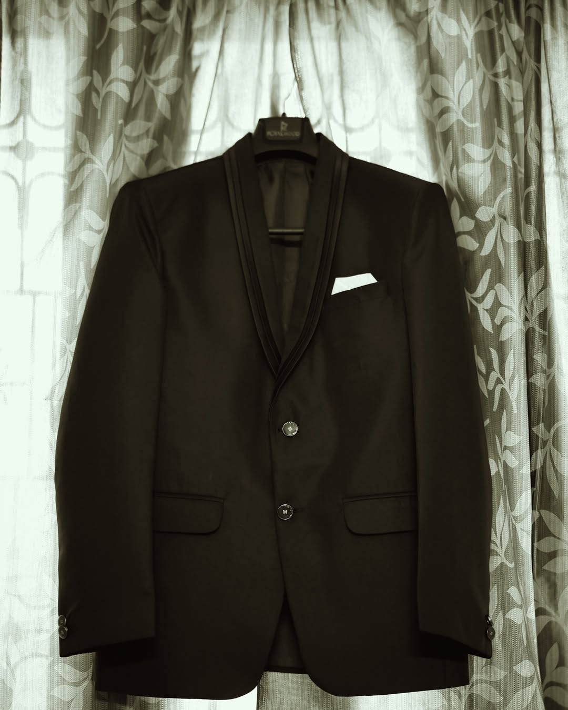
Some photographs are not seen. They are felt years later.
SHARON PHOTOGRAPHY
Selected Gallery
Selected frames
Testimonials
What couples remember
We did not feel like we were posing. We felt like someone was quietly preserving our day.
— A Sharon Photography CoupleEvery photo felt emotional, clean, and timeless. Our families loved the album.
— Wedding ClientThe pictures looked premium without feeling artificial. Exactly what we wanted.
— Couple Session Client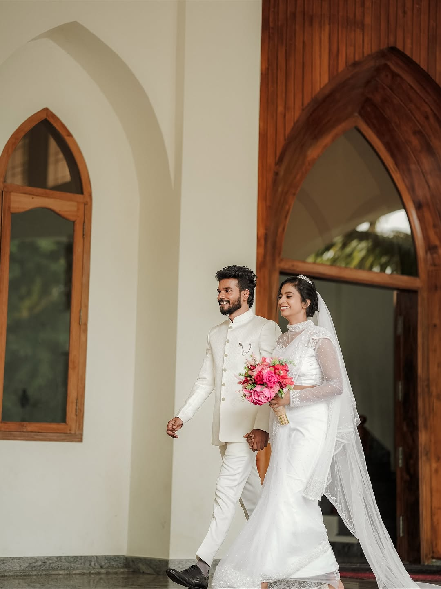
Final Booking CTA
Let your wedding become a story worth returning to.
For weddings in Kanyakumari and beyond, Sharon Photography creates timeless frames for couples who value elegance, emotion, and legacy.
- Call+91 73970 19468
- WhatsApp+91 73970 19468
- Instagram@_.sharon_photography._
-
Location
Kanyakumari, Tamil Nadu